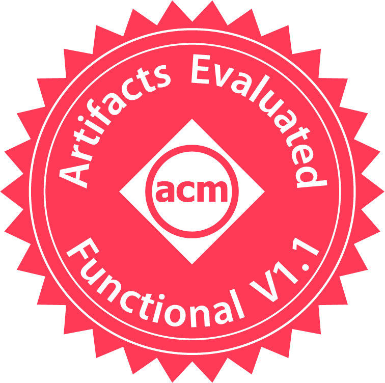
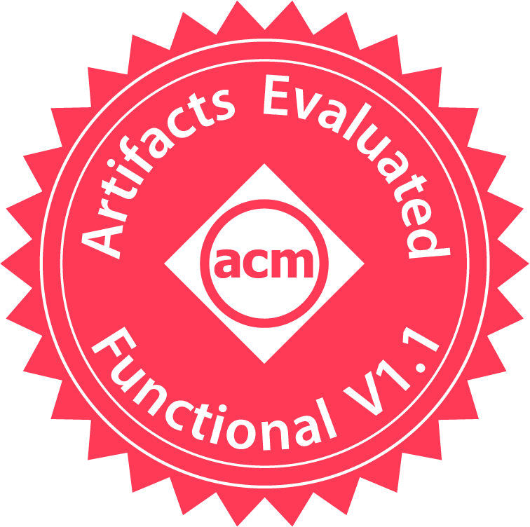

|
Yuzhe Tang Associate ProfessorDept. of EECS, Syracuse University 4206 Center of Science and Technology, Syracuse, 13244-4100 Email: ytang100 [at] syr [dot] edu C.V.: [webpage],[pdf]  @Twitter, Github, Scholar, LinkedIn |
We have Ph.D. opennings for self-motivated and talented students to join our group [link]. Please share your thoughts/ideas on my recent papers before sending an email.
Feb 2023: Our DeFi security work is conditionally accepted to Euro S&P’23. Congrats to Jiaqi!
Feb 2023: Our collaborative work on Blockchain Data Explorer is accepted to IEEE Transactions on Computers (TC)!
Jan 2023: Our paper on Blockchain Ethics is accepted to EthiCS 23!
Jan 2023: The extension of our iBatch work (FSE’21) is accepted to TSE’23. Congrats to Yibo and Jiaqi!
Oct 2022: My student Wanning Ding received Ethereum Protocol Fellowship. Congrats to Wanning!
Aug 2022: Invited to serve Euro S&P 23 program committee. Please submit your best work: [CFP].
Aug 2022: Our blockchain paper accepted to ConsensusDay 2022. Congrats to Yibo and Kai!
July 2022: Grateful to receive an NSF CNS grant (Single PI) on blockchain systems research.
June 2022: Grateful to receive an academic grant (Single PI) from Ethereum Foundation on blockchain security research.
June 2022: Invited to talk about blockchain applications at DBSec 2022 [link].
Apr. 2022: My Ph.D. student [Kai Li] is joining [the Computer Science Dept. at San Diego State Univ.] as a tenure-track Assistant Professor. Godspeed to Kai!!
Feb. 2022: Invited to talk about our blockchain research in [UK Security seminar] and at [NUS].
Feb. 2022: Invited talk in [NSF blockchain-education workshop]: [slides].
Sep. 2021: Our blockchain paper accepted to ACM CCS 2021. Congrats to Kai and Yibo!
Aug. 2021: Our blockchain paper accepted to ACM IMC 2021. Congrats to Kai!
Aug. 2021: Our paper accepted to ACM Middleware 2021 (Industrial track).
Aug. 2021: Invited to serve a blockchain panel in VLDB’21 [link].
June 2021: Grateful to receive an NSF SaTC education grant. We will be developing blockchain labs [link].
June 2021: Our blockchain paper accepted to ESEC/FSE 2021. Congrats to Yibo, Kai and Jiaqi!
Oct. 2020: Our blockchain paper accepted to NDSS 2021. Congrats to Kai, Jiaqi and Xianghong!
Aug. 2020: Our blockchain paper accepted to Middleware 2020. Congrats to Kai and Zhehu!
Nov. 2019: Chair blockchain workshop BlockDM 2020. Please submit your best work [link].
July 2019: Deliver a public lecture to K-12 in Syracuse City School District.
Apr 2019: Honorable mention in Google & Intel 2019 C3 Challenge. Congrats to Kai and Burak! [link]
May 2018: Release blockchain labs and deliver them in the SEED workshop: [link].
Apr. 2018: Release Intel SGX labs: [link].
Research Interests
Dr. Tang is broadly interested in cyber-security and computer systems research. His cyber-security research is geared toward applying formal methods, program analysis, and software testing techniques for vulnerability discovery, attack detection, secure system designs in domain applications. He is also interested in security-oriented measurement of large-scale systems.
His current research mission is to bring systems security and efficiency into real-life decentralized systems like blockchains. He tackles the grand challenges at different blockchain layers, including DeFi protocols, smart contracts, layer-two web3 infrastructures, layer-one consensus implementations, and P2P networking. His research and educational efforts on the blockchain are currently supported by two active National Science Foundation grant awards and an Ethereum Foundation academic-grant award (please read below). His blockchain research is published at top-tier venues, such as [CCS21],[NDSS21],[IMC21],[FSE21],[Middleware20],[ICDE19]. His research results in software updates in popular Ethereum clients, including Geth, Besu and OpenEthereum. He also builds the [BADD labs] for active learning in Blockchain And Dapp Development.
Besides blockchains, he has worked on confidential computing and secure clouds, trusted execution environments, applied privacy-preserving protocols, and peer-to-peer data management. His research is generously supported by National Science Foundation (NSF), Ethereum Foundation, National Security Agency (NSA), Intel, Cyber Research Institute, and Syracuse University. Listed below are selected awards:
DoS-secure transaction propagation on Ethereum: Exploit generation and attack detection. Agency: Ethereum Foundation (Academic Grant), Single PI
One Size doesn't Fit All: Workload-Aware Cost Optimization for Decentralized Applications on Blockchains. Agency: NSF (CNS Core: Small), Single PI
Developing Instructional Laboratories for Blockchain Security Applications. Agency: NSF (SaTC: EDU)
External Obliviousness in Trusted Execution Environments. Agency: NSF (SaTC: Small), Single PI
More detail about his research is described on [link] and in his C.V. [webpage],[pdf].
Selected Publications
Underline: students advised by me.
J. Chen, Y. Wang, Y. Zhou, W. Ding , Yuzhe Tang, X. Wang, K. Li. “DeFi security on blockchains (Title TBA)”, IEEE Euro S&P 2023 (Conditionally accepted)
K. Li, Y. Wang, Yuzhe Tang. “DETER: Denial of Ethereum Txpool sERvices”, ACM CCS 2021, AR=22% [pdf], [slides]
We built an online DETER-attack detector: [link].
News report: [medium report (Korean)], [tech. blog (Chinese)], [chainstack blog]
K. Li, J. Chen, X. Liu, Yuzhe Tang, X. Wang, X. Luo. “As Strong As Its Weakest Link: How to Break (and Fix) Blockchain DApps at RPC Service”, ISOC NDSS 2021, AR=15.2% [pdf], [slides]
K. Li, Yuzhe Tang, J. Chen, Y. Wang, X. Liu. “TopoShot: Uncovering Ethereum's Network Topology Leveraging Replacement Transactions”, ACM IMC 2021, AR=28% [pdf], [slides], [poster], [open dataset]
Y. Wang, Q. Zhang, K. Li, Yuzhe Tang, J. Chen, X. Luo, T. Chen. “iBatch: Saving Ethereum Fees via Secure and Cost-Effective Batching of Smart-Contract Invocations” ESEC/FSE 2021, AR=24.5% [pdf], [extended version], [html], [slides]
Yuzhe Tang, K. Li, Q. Zhang, J. Xu, J. Chen. “Authenticated Key-Value Stores with Hardware Enclaves”, ACM/IFIP Middleware 2021 (Industrial track) [pdf], [extended version] [slides]
K. Li, Yuzhe Tang, J. Chen, Z. Yuan, C. Xu, J. Xu. “Cost-Effective Data Feeds to Blockchains via Workload-Adaptive Data Replication”, ACM/IFIP Middleware 2020, AR=25.2% [pdf], [extended version], [slides]
[code] (passed Middleware’20 artifact evaluation)
 

C. Zhang, C. Xu, J. Xu, Yuzhe Tang, B. Choi. “GEM^2-Tree: A Gas-Efficient Structure for Authenticated Range Queries in Blockchain”, IEEE ICDE 2019, Full Paper, AR=26.8% [pdf]
Full list of publications: [link], [DBLP].
Open-source Software
BADD Labs: Hands-on labs for Blockchain And Dapp Development: [Github repo.], [website]
Secondary index on HBase: [Github repo.]
Intel SGX emulator by Linux kernel module: [Github repo.]
Advising
I am fortunate and grateful to work with the following bright Ph.D. students.
Yibo Wang [link]: FSE'21, TSE'23, CCS’22 poster, ConsensusDay’22 (1st author), IMC'21, CCS'21
Jiaqi Chen [link]: Euro S&P'23 (1st author), NDSS'21, IMC'21, FSE'21, Middleware'20
Yuxuan Zhou [link]
Wanning Ding [link]: Ethereum Protocol Fellowship’22 awardee
Xianghong Liu: NDSS'21, IMC'21
Alumni:
Kai Li (Ph.D.) [link]: Tenure-track Assistant Professor at San Diego State Univ., 2022 NortonLifeLock Fellowship finalist.
[Link] to our FullStack Security Lab (FSSL).
Teaching
CIS/FIN629 (2022/2021/2020/2019/2018): Blockchain Foundations and Applications. [website] [lectures] [hands-on labs]
CSE384 (2023/2022/2019/2018/2017): Systems and network programming. [website]
CIS628/428 (2019): Introduction to applied cryptography. [website], [lecture notes]
CIS655 (2016/2015/2014): Advanced computer architecture. [website]
CIS700 (2015): Research seminar. [website]